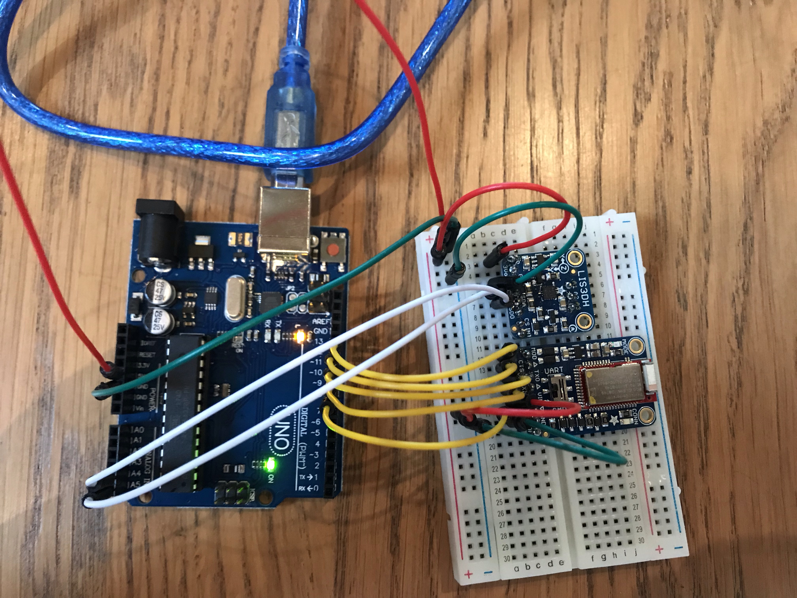

Tölva: Arduino Uno
Bluetooth module: Adafruit Bluefruit LE UART Friend
Accelerometer: Adafruit LIS3DH
Gyroscope: Sending kom ekki, fékk einhvern útlímdann sem ég fékk ekki til að virka
Power Supply: Sending kom ekki
Ætlaði fyrst að nota Arduino Micro en endaði á því að nota Uno þar sem það er meiri heimavöllur. Það var mikið íhlutavesen þannig verkefnið varð aðeins ólíkt því sem var áætlað
Fyrst lóðaði ég tenglana á bluetooth module-ið (myndir af útkomunni undir myndir) og notaðist við Documentationið á síðunni hjá þeim til að tengja þetta og setja upp. Það fylgdi með mjög gott library sem ég notaði til að tengjast við farsíma og senda gögn
Linkur á Documentation/LibraryNæst gerði ég það sama fyrir accelerometerinn og þar sem hann er líka frá Adafruit var mjög gott Documentation og library sem fylgdi með
Linkur á Documentation/LibraryNæst var það að fá þessa tvo hluti til að tala saman. Þeas. Fá bluetooth module-ið til að tala við accelerometerinn og senda gögnin sem hann framkallaði. Það var mikið fikt en það tókst að lokum.
Myndband sem sýnir virknina: